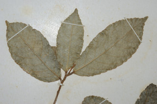
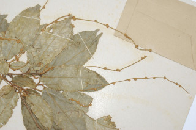
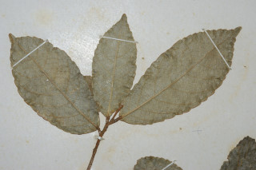
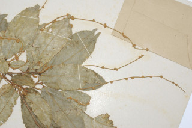

Trees 5 m tall.
5 ಮೀ. ಎತ್ತರದವರೆಗೆ ಬೆಳೆಯುವ ಮರಗಳು.
5 മീറ്റര് ഉയരമുളള മരങ്ങള്.
மரங்கள் 5 மீ. உயரம் வரை வளரக்கூடியது
Young branchlets stellately pubescent.
ಎಳೆ ಕಿರುಕೊಂಬೆಗಳು ನಕ್ಷತ್ರ-ಮೃದುತುಪ್ಪಳದಿಂದ ಕೂಡಿರುತ್ತವೆ.
ഇളം ഉപശാഖകള് നക്ഷത്രാകാര രോമിലമാണ്.
சிறிய நுனிக்கிளைகள் நட்சத்திரம் வடிவம் போன்ற கிளைகளுடைய உரோமங்கள் கொண்டது.
Leaves simple, alternate, spiral; stipules pinnatifid, caducous; petiole to 0.7 cm long, terete, stout; lamina up to 18 x 5 cm, elliptic-oblong, apex acuminate, base acute to rounded, margin crenate with glands at crenatures, stellate hairy when young, later glabrous; midrib raised above; secondary_nerves 8-12 pairs, gradually curved; tertiary_nerves obliquely_percurrent.
ಎಲೆಗಳು ಸರಳವಾಗಿದ್ದು,ಪರ್ಯಾಯ ಮತ್ತು ಸುತ್ತು ಜೋಡನಾ ವ್ಯವಸ್ಥೆಯಲ್ಲಿರುತ್ತವೆ; ಕಾವಿನೆಲೆಗಳು ಗರಿ ರೂಪಿಗಳಾಗಿದ್ದು ಉದುರಿಹೋಗುವಂತಹವು;ತೊಟ್ಟುಗಳು 0.7 ಸೆಂ.ಮೀ. ವರೆಗಿನ ಉದ್ದವಿದ್ದು, ದುಂಡಾಗಿದ್ದು ದೃಢವಾಗಿರುತ್ತವೆ;ಪತ್ರಗಳು 18 X 5 ಸೆಂ. ಮೀ. ಗಾತ್ರ, ಅಂಡವೃತ್ತ-ಚತುರಸ್ರದ ಆಕಾರ ಹೊಂದಿರುತ್ತವೆ;ತುದಿ ಕ್ರಮೇಣ ಚೂಪಾಗುವ ರೀತಿಯಲ್ಲಿ ಇರುತ್ತದೆ,ಬುಡ ಚೂಪಾಗಿರುವುದರಿಂದ ದುಂಡಾಕಾರದವರೆಗಿನ ಮಾದರಿಯಲ್ಲಿರುತ್ತದೆ, ಅಂಚು ದಂತಗಳ ಬಳಿಯಲ್ಲಿ ರಸಗ್ರಂಥಿಗಳನ್ನೊಳಗೊಂಡ ದುಂಡೇಣಿನ ದಂತಗಳಿಂದ ಕೂಡಿರುತ್ತದೆ ಪತ್ರಗಳು ಎಳೆಯದಾಗಿದ್ದಾಗ ಮೇಲ್ಮೈ ನಕ್ಷತ್ರ-ರೋಮಗಳ ಸಹಿತವಾಗಿದ್ದು ನಂತರ ರೋಮರಹಿತವಾಗಿರುತ್ತವೆ;ಮಧ್ಯನಾಳ ಪತ್ರದ ಮೇಲ್ಭಾಗದಲ್ಲಿ ಉಬ್ಬಿರುತ್ತದೆ;ಎರಡನೇ ದರ್ಜೆಯ ನಾಳಗಳು ಕ್ರಮೇಣವಾಗಿ ಬಾಗುವ 8-12 ಜೋಡಿಗಳಿರುತ್ತವೆ ಮೂರನೇ ದರ್ಜೆಯ ನಾಳಗಳು ಓರೆಯಾಗಿ ಎಲೆ ದಿಂಡಿಗೆ ಅಡ್ಡವಾಗಿ ಕೂಡುವಂತವು.
ലഘുവായ ഇലകള്, ഏകാന്തരക്രമത്തില്, സര്പ്പിളമായി അടുക്കിയിരിക്കുന്നു; എളുപ്പം കൊഴിഞ്ഞ് വീഴുന്ന അനുപത്രങ്ങള് പിന്നാറ്റിഫിഡ് ആണ്; ദൃഢവും ഉരുണ്ടതുമായ ഇലഞെട്ടിന് 0.7 സെ.മീ വരെ നീളം; പത്രഫലകത്തിന് 18 സെ.മീ വരെ നീളവും 5 സെ.മീ വരെ വീതിയും, ദീര്ഘവൃത്താകാര ആയതാകാരവുമാണ്, പത്രാഗ്രം ദീര്ഘവും, പത്രാധാരം നിശിതം തൊട്ട് വൃത്താകാരം വരെയാകാം, അരികുകള് ദന്തിതമാണ്, ദന്തങ്ങളില് ഗ്രന്ഥികളുമുണ്ട്, ഇളതായിരിക്കമ്പോള് നക്ഷത്രാകാര രോമിലമാണ്, പിന്നീട് അരോമിലവും; മുഖ്യസിര മുകളില് ഉയര്ന്നതാണ്; സാവധാനം വളഞ്ഞുപോകുന്ന 8 മുതല് 12 വരെ ജോഡി ദ്വിതീയ ഞരമ്പുകള്; ത്രിതീയ ഞരമ്പുകള് ചരിഞ്ഞ പെര്കറന്റ് ആണ്.
இலைகள் தனித்தவை, மாற்றுஅடுக்கமானவை, சுழல் போன்று அமைந்தவை; இலையடிச்செதில் சிறகு போன்ற பிளவுகளுடையது, எளிதில் உதிரக்கூடியவை; இலைக்காம்பு 0.7 செ.மீ. நீளமானது, குறுக்குவெட்டுத் தோற்றத்தில் வளையமானது, தடித்தது; இலை அலகு 18 X 5 செ.மீ., நீள்வட்ட-நீள்சதுர வடிவானது, அலகின் நுனி அதிக்கூரியது, அலகின் தளம் கூரியது முதல் வட்டமானது, அலகின் விளிம்பு பிறை போன்ற பற்களுடையது, மேலும் பிறைகளின் நடுவில் சுரப்பிகளுடையது, இலைகுறுத்து நட்சத்திர உரோமங்களுடையது, பிறகு உரோமங்களற்றது; மையநரம்பு மேற்புறத்தில் அலகின் மேற்பரப்பைவிட உயர்ந்தது; இரண்டாம் நிலை நரம்புகள் 8-12 ஜோடிகள் வளைந்தது; மூன்றாம் நிலை நரம்புகள் அலகின் தளம் நோக்கிய பெர்க்கரண்ட்.
Flowers unisexual; male flowers in clusters on elongated spikes; female in short spikes.
ಹೂಗಳು ಏಕಲಿಂಗಿಗಳಾಗಿರುತ್ತವೆ.ಗಂಡು ಹೂಗಳು ಗುಚ್ಛಗಳಲ್ಲಿದ್ದು ಉದ್ದವಾದ ಕದಿರು ಪುಷ್ಪಮಂಜರಿಯಲ್ಲಿ ಇರುತ್ತವೆ; ಹೆಣ್ಣು ಹೂಗಳು ಕಿರಿದಾದ ಕದಿರು ಪುಷ್ಪಮಂಜರಿಯಲ್ಲಿ ಇರುತ್ತವೆ.
പൂക്കള് ഏകലിംഗികളാണ്; ആണ്പൂക്കള് നീളമേറിയ സ്പൈക്കുകളില് കൂട്ടമായുണ്ടാകുന്നു; പെണ്പൂക്കള് ചെറു സ്പൈക്കുകളിലും.
மலர்கள் ஓர்பாலானவை; ஆண்மலர்கள் தொகுப்பானவை, நீண்ட ஸ்பைக்; பெண்மலர்கள் குட்டையான ஸ்பைக்.
Capsule 1.2 cm across, 3-2 valved; seeds 3, subglobose
ಸಂಪುಟ ಫಲಗಳು 1.2 ಸೆಂ.ಮೀ. ಅಡ್ಡಗಲದ ಅಳತೆ ಹೊಂದಿದ್ದು, 3 ರಿಂದ 2 ಕೋಶಗಳನ್ನು ಹೊಂದಿರುತ್ತವೆ;ಬೀಜಗಳು 3 ಇದ್ದು ಉಪಗೋಳಾಕಾರದವುಗಳಾಗಿರುತ್ತವೆ.
3 വീതം ഉപഗോളാകാര വിത്തുകളുളള, 2 ഓ 3 ഓ ഭാഗങ്ങളുളളതും 1.2 സെ.മീ കുറുകേയുളളതുമായ കായ, കാപ്സ്യൂള് ആണ്.
வெடிகனி (கேப்சூல்) 1-2 செ.மீ. குறுக்களவுடையது, 3-2 அறைகளுடையது; விதைகள் 3, கோளவடிவானது.
 


